GOLD RUSH · Phase 3
Level design
You take a tour of the prefab kit and of the first level, Training Yard. It is a 32 × 32 m yard with a grid floor, walls all around, an exit gate in the north wall, lamp posts and blocks to hide behind. You see how the level is sorted into groups, how the sky and fog are made, and how the level gets into the build, so the PLAY button in the menu opens it.
1What you get
The package has the menu from Phase 2 plus the scene Scenes/Level1. Level1 has only the level: floor, walls, gate, lamps, obstacles, decoration, and an overview camera. There is no player, no coins and no monsters yet (Phases 4–8).
The prefab kit
A prefab is a saved GameObject (with its children and components) stored as a file. You can place it in a scene many times. Open Assets/GoldRush/Prefabs/Level. Sizes are width × height × depth.
| Picture | Prefab | Size | What it is |
|---|---|---|---|
 | Floor_40m | 40 × 40 m | Grid floor (2 m tiles) on a dark plinth. The top is at Y = 0. Solid. |
 | OuterGround | 480 × 480 m | Big dark ground around the level, 0.6 m lower. No collider. |
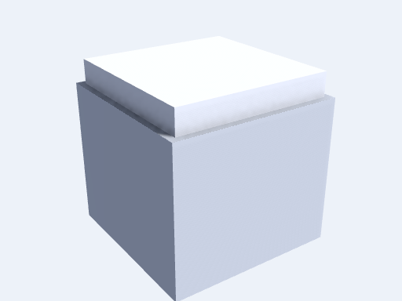 | Block_1x1x1 | 1 × 1 × 1 | Small grey block. |
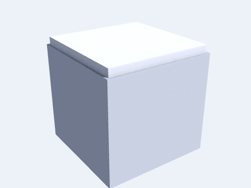 | Block_2x2x2 | 2 × 2 × 2 | Big grey block. |
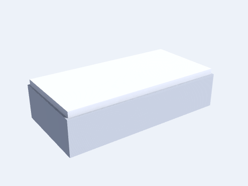 | Block_4x1x2 | 4 × 1 × 2 | Long low block (cover). |
 | AccentBlock_Red / _Orange / _Teal | 1.5 × 1.5 × 1.5 | Coloured blocks: landmarks. |
 | Wall_4m, Wall_8m | 4 or 8 × 2.3 × 1 | Walls. The length is along X. |
 | Pillar | 1 × 3 × 1 | Square pillar with a glowing cyan band. |
 | Barrier_Orange | 3 × 0.95 × 0.6 | Low wall to hide behind. |
 | LampPost | 0.6 × 3.5 × 0.6 | Post with a glowing cap and a warm point light. |
 | Terminal | 1.1 × 1.5 × 0.75 | Computer console with a glowing screen. |
 | FloorPad_Cyan | 3 × 3 m | Flat glowing pad. Decoration, no collider. |
Prefabs/Gameplay has the finished game objects: Player, Coin, ExitGate, the three monsters and the three power-ups. Prefabs/Markers has the markers that say where they start: PlayerSpawn, CoinSpot, Monster_Slime / _Ghost / _MushroomKing and PowerUp_Speed / _Ghost / _Magnet. You meet them in Phases 4–8 and use them in the Practicals.
Y = 0 stands exactly on the floor. Do not click Overrides → Apply All on a kit piece in a scene: that changes the prefab file, so every copy in every scene changes.2Import
- Make a new empty project as in Phase 0, steps 2–5. Or delete the folder
Assets/GoldRushin your old project. - Open Assets → Import Package → Custom Package… → choose
GoldRush_Phase03_Level.unitypackage→ Import. - Open File → Build Profiles → Scene List. Drag
Scenes/MainMenuand thenScenes/Level1into the list. MainMenu is number 0, Level1 is number 1. Untick any other scene (for exampleSampleScene). - Double-click
Scenes/Level1to open it.
3Check
To fly around in the Scene view: hold the right mouse button and press W A S D (Q / E = down / up, Shift = faster). Select an object and press F to jump to it.
Check 1 · The kit in the Project window
Open Prefabs/Level and compare with the table above. Double-click LampPost: it opens in Prefab Mode. The Hierarchy shows its child LampLight, a warm point light. Click the < arrow at the top of the Hierarchy to go back to the scene.
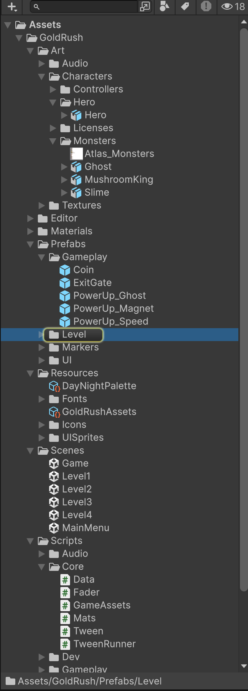
Check 2 · The level root and its groups
Open Level 1 - Training Yard in the Hierarchy. Empty GameObjects work like folders. Every group is at 0, 0, 0.
| Group | What goes in it |
|---|---|
Static | Everything solid that never moves: Floor, Walls, Structures, Obstacles, Lamps and the ExitGate. In Phase 7 the monsters' NavMesh is built from this group. |
Decor | Flat glowing pads and lines on the floor. No colliders. |
Scenery | Decoration outside the yard: the big OuterGround, low Rim blocks and tall Tower blocks in the distance. |
Gameplay | Comes in Phase 4: the markers where the player, coins, monsters and power-ups start. |
The root itself has two components: Level Scene (Arena Half = 16: the yard goes from -16 to +16 on X and Z) and Day Night Tint (day and night colours of the level materials).
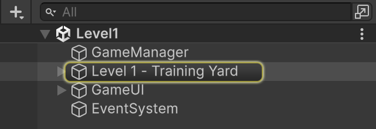
Block, Pillar, LampPost. They look and work the same as the kit.Check 3 · Floor and walls
North is +Z. The hero starts in the south and runs north to the exit gate.
Static/Floor: the 40 × 40 m grid floor (same asFloor_40m), plus a flatGroundCollider. The floor is bigger than the yard, so you never see its edge from inside.Static/Walls/PerimeterWall: walls 1 m thick at±16.5, so their inside face is at ±16. Square posts stand in the corners and at ±5.3. The north wall has an opening of about 8 m in the middle for the gate.PerimeterWall/GateBlocker: an invisible Box Collider (7.5 × 5 × 1) at0, 2.5, 17.25, just behind the gate. Nobody can walk out of the yard.
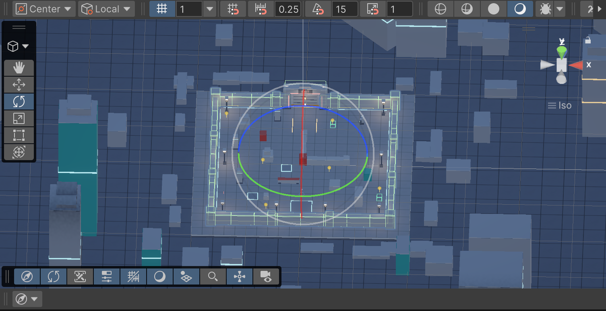
Check 4 · The exit gate
Select Static/ExitGate. Position 0, 0, 16: in the opening of the north wall. It has the script Exit Gate with fields for its parts (Door, Glow, GlowLight, Text, MarkerAnchor). The gate opens after the last coin: you look at the script in Phase 6.

Check 5 · The lamps
Static/Lamps has 8 lamp posts. Each LampPost/LampLight is a Point light (colour FFE0B3, Intensity 2.4, Range 9, no shadows) with a Night Light component (Night Intensity 2.4): the lamp shines at night and switches off by day.
| Lamps | Positions | Where |
|---|---|---|
| 4 | ±14.4, 0, ±14.4 | The four corners |
| 2 | -14.4, 0, 0 · 14.4, 0, 0 | West and east, middle |
| 2 | -4.5, 0, -14.4 · 4.5, 0, -14.4 | South, left and right of the start |
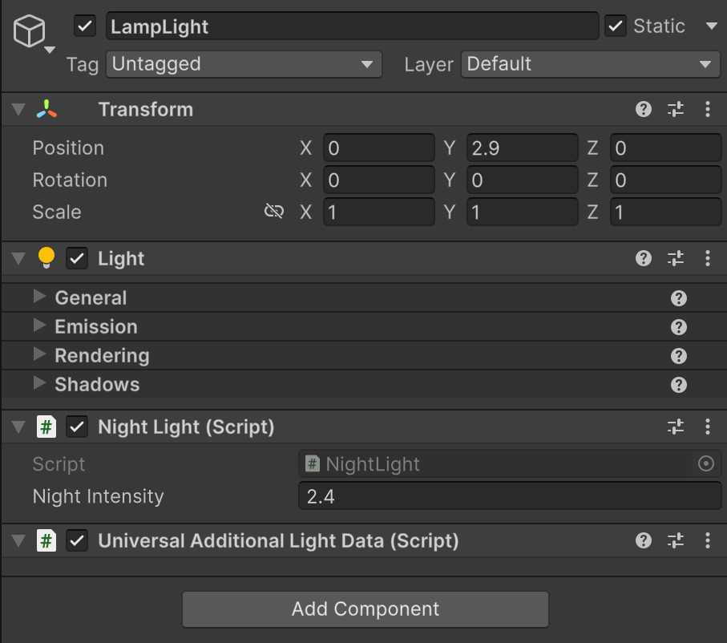
Check 6 · Obstacles and cover
Obstacles give the hero places to hide from monsters. Only the position changes; rotation and scale stay at the default.
| Object | Position | What it is |
|---|---|---|
Structures/LCover | 4, 0, 4 | An L-shaped cover: a teal block and long low blocks. |
Obstacles/Barrier | -2.5, 0, -5 | The orange barrier in front of the start. |
Obstacles/Pillar × 3 | -12.5, 0, 4.5 · -11.5, 0, -5 · -5, 0, 12.5 | Pillars with a cyan band. |
Obstacles/Stack × 2 | -11, 0, 10.5 · -6.5, 0, 1.5 | A small block on top of a big block. |
Obstacles/Block × 5 | 6, 0, -6 · -6.5, 0, -9.5 · 10.5, 0, -10 · 12, 0, -3.5 · -7.5, 0, 7 | Grey and coloured blocks. |
Obstacles/Terminal | 10.5, 0, 12 | A computer console with a glowing screen. |
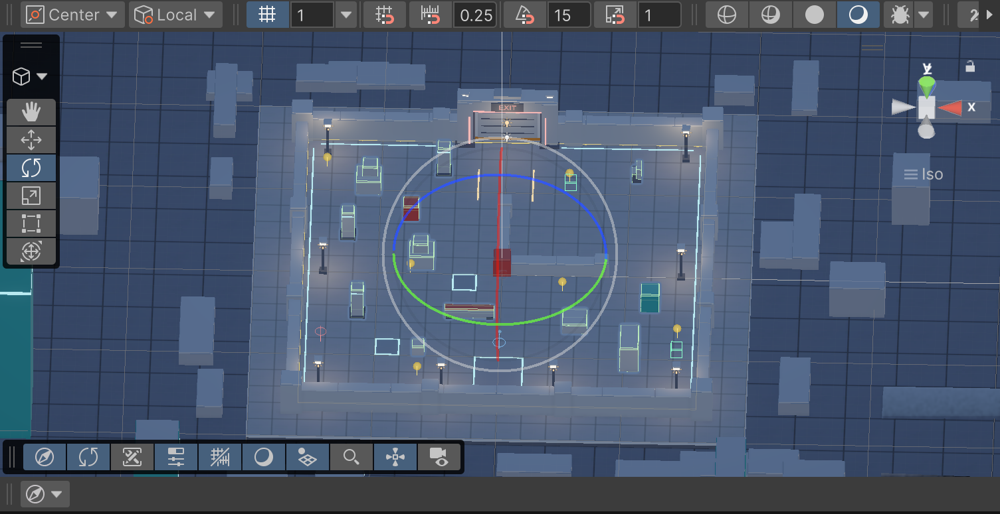
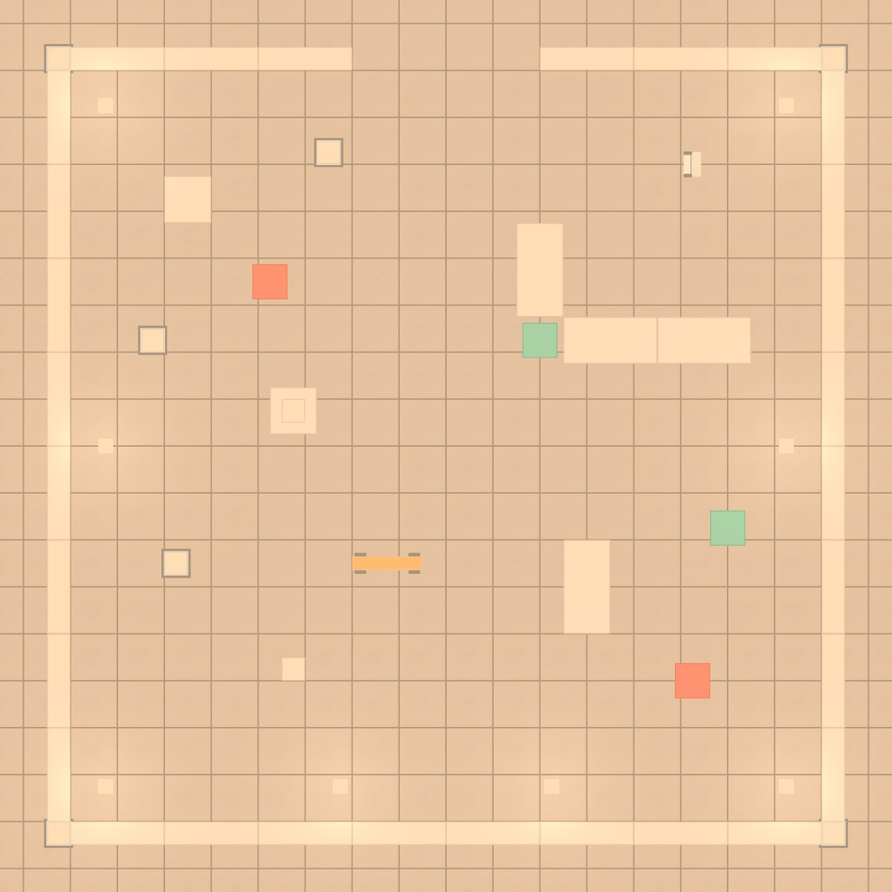
Check 7 · Decor and scenery
Decor has three glowing FloorPads (at -3, 0, -1, -9, 0, -9 and 0, 0, -12) and thin glowing FloorStrip lines along the walls. Scenery has the OuterGround (480 × 480 m, 0.6 m lower than the floor), 18 Rim blocks just outside the walls and 32 Tower blocks far away. Nothing in Decor or Scenery has a collider that the hero can reach.
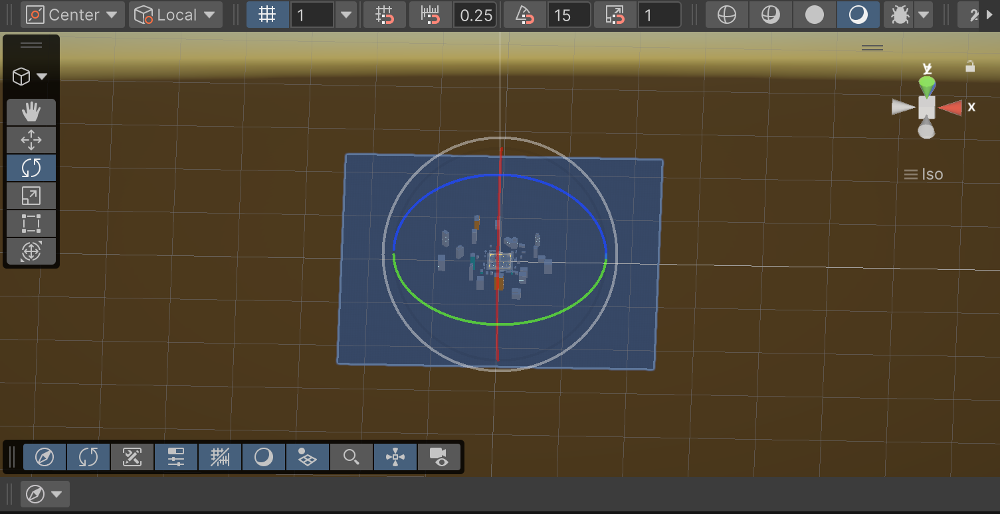
Check 8 · The Scene List
Open File → Build Profiles → Scene List. The menu's PLAY button loads the scene called Level1, so it must be in this list.

4How it works
How PLAY finds the level (Data.cs and GoldRushMenu.cs):
// Data.cs: the first level points to the scene "Level1"
new LevelDef { title = "Training Yard", subtitle = "Learn the ropes", seed = 101,
scene = "Level1", size = 32, coins = 6, patrollers = 2, … },
// the scene to load for the chosen level
public static string SceneName => string.IsNullOrEmpty(Current.scene) ? Scenes.Game : Current.scene;
// GoldRushMenu.cs: PLAY and the level cards call this
public void StartLevel(int index)
{
GameSession.LevelIndex = index;
Fader.Load(GameSession.SceneName);
}- PLAY starts the newest unlocked level. For a new save that is level index 0: Training Yard, scene
Level1. GameSession.LevelIndexis static: it keeps its value when a new scene loads. The level scene reads it to know which level it is.Fader.Load()fades to black, loads the scene and fades in again.- Level Scene on the level root tells the game "this is a hand-made level". From Phase 4, the GameManager finds it and uses the markers under it.
- Sky, sun and fog. In this package the scene has a
Sun(Directional Light) and the sunset sky + fog set in Window → Rendering → Lighting → Environment. From Phase 4 the GameManager also callsEnvironmentSetup.Apply()when the level starts, which sets the same look (plus day/night). The values:
| Setting | Value (in a level) |
|---|---|
| Skybox | GR_SunsetSky (from GoldRushAssets) |
| Ambient light | Gradient: sky CCB29E, equator BD8F6B, ground 75543D |
| Fog | Linear, colour F5C999, start 35, end 120 (menu: 25 / 80) |
| Sun | Directional, colour FFDEAD, Intensity 1.5, Rotation 30, 35, 0, Soft Shadows, Strength 0.75 |
| Post-processing | Bloom (glow), Vignette (dark corners), Neutral tonemapping, a bit more contrast and colour |
Then DayNight blends everything to the day or the night look (Phase 10). Ambient light is soft light from everywhere, so shadows are not black. Fog fades far things into a haze.
5▶ Press Play
- Open
Scenes/MainMenuand click ▶ Play. - Click PLAY. The screen fades to black, then Level1 appears, seen from the overview camera.
- While it plays, click the Scene tab and fly around.
- Click ▶ again to stop. You are back in the MainMenu scene.
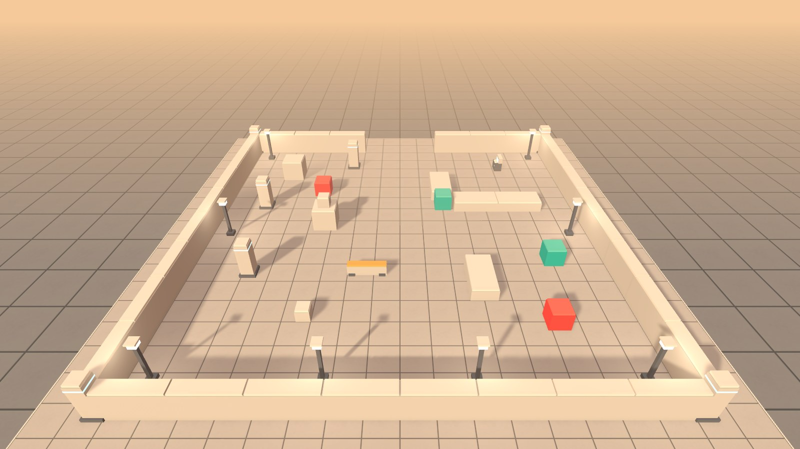
You should see:
- PLAY in the menu fades into Level1.
- A grid floor with walls on all four sides and the exit gate in the north wall.
- 8 lamp posts, pillars with cyan bands, blocks, an orange barrier and a terminal.
- No red errors in the Console.
6Try it
- Add a block. Drag
Prefabs/Level/AccentBlock_OrangeontoStatic/Obstacles. Set its Position to0, 0, 0(the middle of the yard). Press Play from the menu: the block is there. Keep a free path to the gate. - Move a lamp. Select a
LampPostinStatic/Lampsand change its Position X. Keep it inside the yard (between -15 and 15). - See what a missing scene does. In Build Profiles, untick
Level1. Press PLAY in the menu: the screen goes black and back, and the Console says the scene couldn't be loaded. Tick it again.
7Common problems
| Problem | Fix |
|---|---|
| PLAY does nothing. The Console says Scene 'Level1' couldn't be loaded because it has not been added to the build settings. | Add Scenes/Level1 to File → Build Profiles → Scene List (step 2). |
| In a build, the game starts in Level1, not in the menu. | In the Scene List, MainMenu must be number 0. Drag it to the top. |
| A level card for Level 2–4 or the Daily Rush gives the same error. | Normal: those scenes come in Phase 10. |
| The level is dark and grey, with no sunset sky. | Open Window → Rendering → Lighting → Environment and check that Skybox Material is GR_SunsetSky and Sun Source is Sun. |
| A block floats or sinks into the floor. | Set its Position Y to 0. The pivot is at the bottom. |
| I changed a kit prefab by mistake (Apply All). | Edit → Undo, or import the package again. |
More fixes are on the Troubleshooting page. New words are in the Glossary.
Next: in Phase 4 the hero comes in: the player, its animations and the third-person camera.